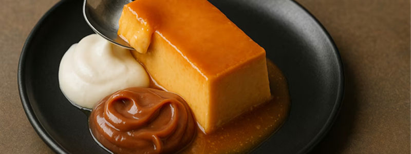
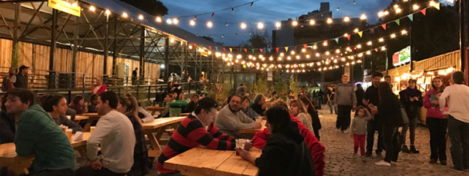

Donde comer
En este buscador vas a poder filtrar por nombre, tipo de establecimiento y barrio


En este buscador vas a poder filtrar por nombre, tipo de establecimiento y barrio
En Buenos Aires vas a encontrar platos tipicos y comida de todo el mundo

conoce los patios y mercados en donde podes disfrutar de la mejor gastronomia